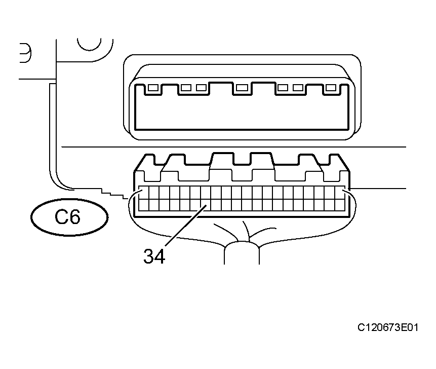
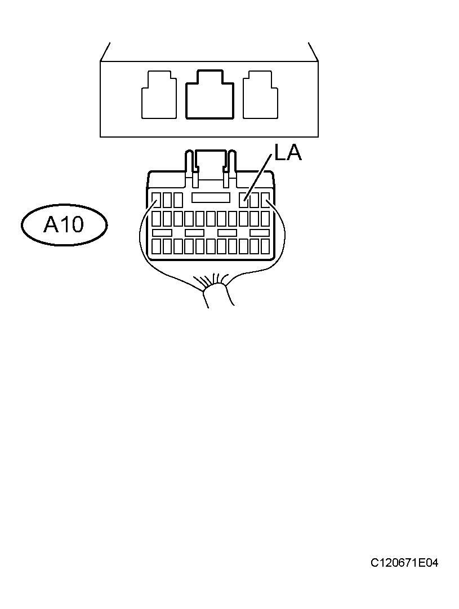

Inspection Procedure
- CHECK CONNECTOR
- Turn the ignition switch to the LOCK position.
- Disconnect the negative (-) terminal cable from the battery, and wait for at least 90 seconds.
- Check the connection of the center airbag sensor assembly connectors and the combination meter assembly connector.
OK:
Connectors are connected.
NG : CONNECT CONNECTORS
OK : Go to Next Step
- CHECK CENTER AIRBAG SENSOR ASSEMBLY
- Disconnect the C6 connector from the combination meter assembly.
- Connect the negative (-) terminal cable to the battery.
- Measure the voltage according to the value(s) in the table below.
Standard voltage
TESTER CONNECTION - SPECIFIED CONDITION (VOLTAGE)Tester Connection Condition Specified Condition C6-34 - Body ground Ignition switch ON Above 8 V
NG : Go to step 4

Courtesy of © TOYOTA, LICENSE AGREEMENT TMS1002OK: Go to next step
- CHECK INSTRUMENT PANEL WIRE (TO B+) (COMBINATION METER ASSEMBLY - BODY GROUND)
- Disconnect the connector from the center airbag sensor assembly.
- Measure the voltage according to the value(s) in the table below.
Standard voltage
TESTER CONNECTION - SPECIFIED CONDITION (VOLTAGE)Tester Connection Condition Specified Condition C6-34 - Body ground Ignition switch ON Below 1 V
NG : REPAIR OR REPLACE INSTRUMENT PANEL WIRE (CENTER AIRBAG SENSOR ASSEMBLY - COMBINATION METER ASSEMBLY)
Courtesy of © TOYOTA, LICENSE AGREEMENT TMS1002OK : REPLACE COMBINATION METER ASSEMBLY
- CHECK INSTRUMENT PANEL WIRE (CENTER AIRBAG SENSOR ASSEMBLY - BODY GROUND)
- Turn the ignition switch to the LOCK position.
- Disconnect the negative (-) terminal cable from the battery, and wait at least 90 seconds.
- Disconnect the connector from the center airbag sensor assembly.
- Measure the resistance according to the value(s) in the table below.
Standard resistance
TESTER CONNECTION - SPECIFIED CONDITION (RESISTANCE)Tester Connection Specified Condition A10-3 (LA) - Body ground 1 MΩ or higher
NG : REPAIR OR REPLACE INSTRUMENT PANEL WIRE
Courtesy of © TOYOTA, LICENSE AGREEMENT TMS1002OK : Go to Next Step
- CHECK INSTRUMENT PANEL WIRE (CENTER AIRBAG SENSOR ASSEMBLY - COMBINATION METER ASSEMBLY)
- Measure the resistance according to the value(s) in the table below.
Standard resistance
TESTER CONNECTION - SPECIFIED CONDITION (RESISTANCE)Tester Connection Specified Condition A10-3 (LA) - C6-34 Below 1 Ω
NG : REPAIR OR REPLACE INSTRUMENT PANEL WIRE (CENTER AIRBAG SENSOR ASSEMBLY - COMBINATION METER ASSEMBLY)

Courtesy of © TOYOTA, LICENSE AGREEMENT TMS1002OK : REPLACE CENTER AIRBAG SENSOR ASSEMBLY
- Measure the resistance according to the value(s) in the table below.